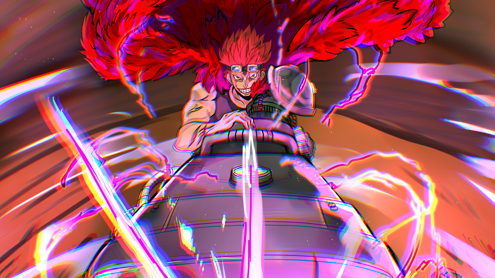
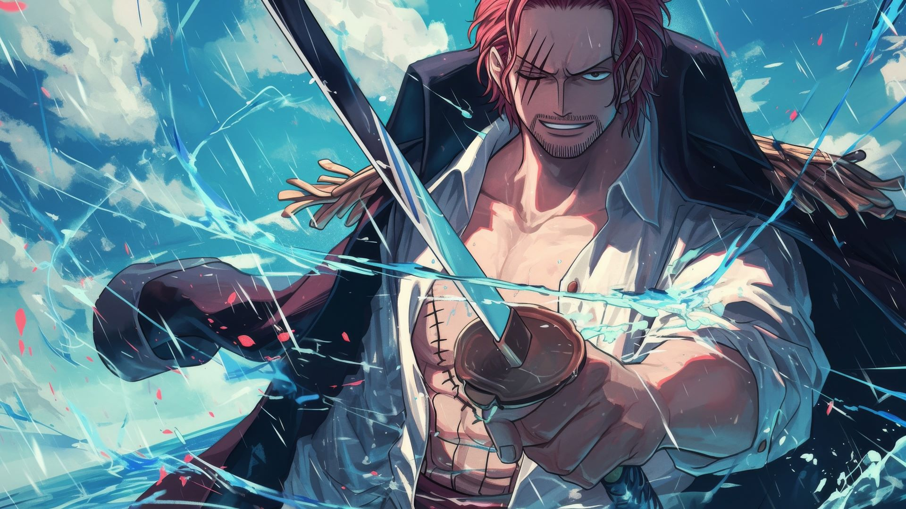
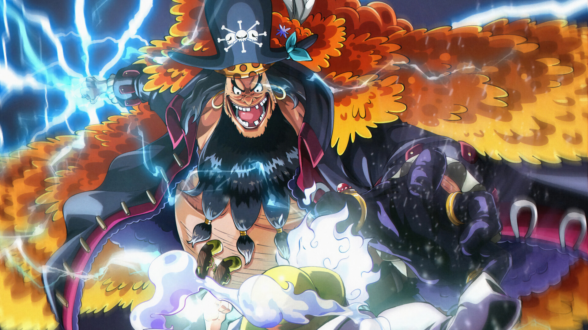
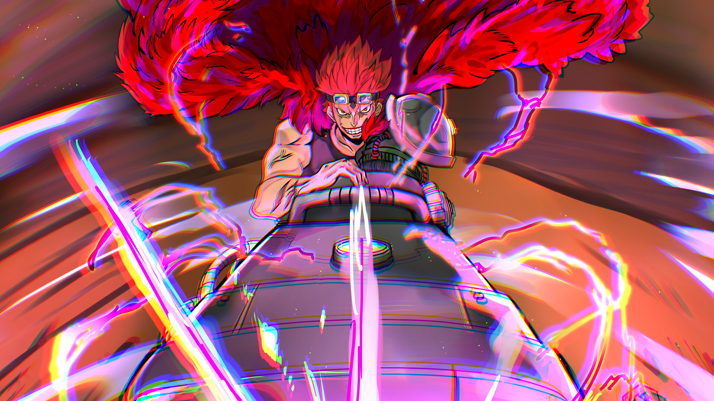
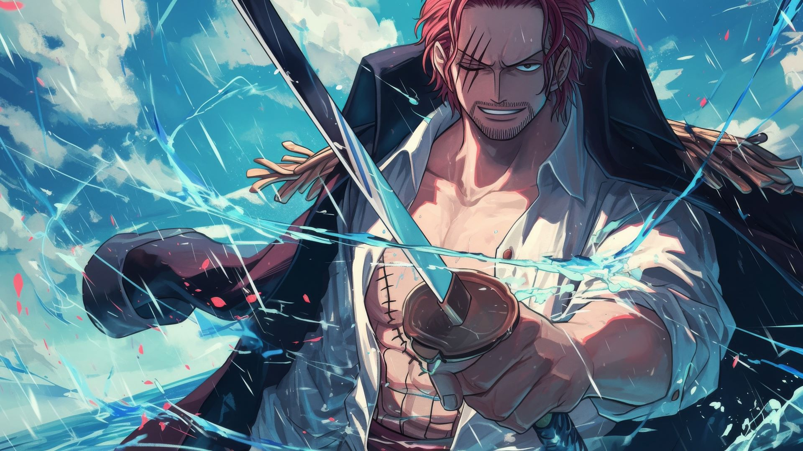
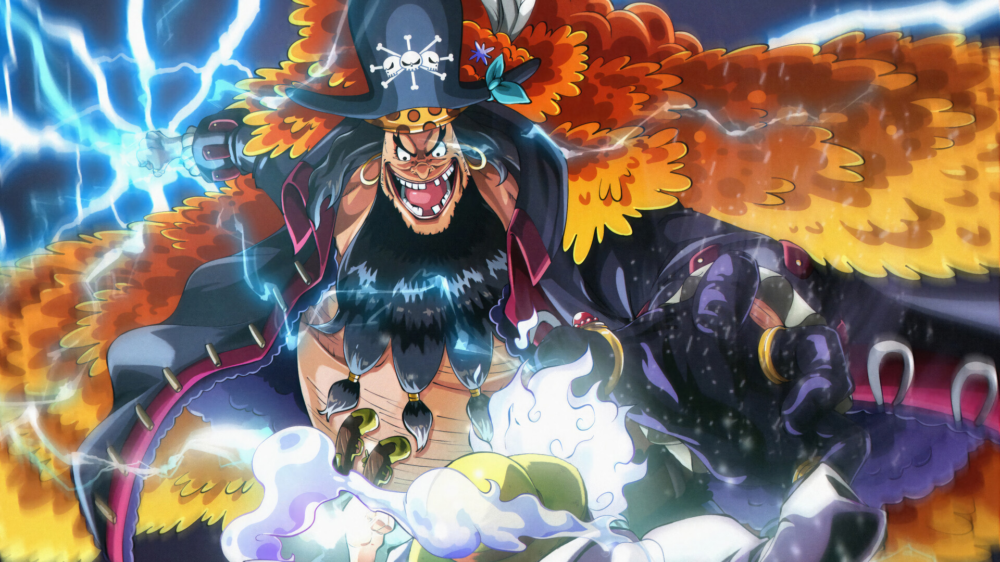

Monkey D. Luffy
Monkey D. Luffy, também conhecido como "Luffy do Chapéu de Palha" e geralmente como "Chapéu de Palha, é um Pirata e principal protagonista do anime e mangá One Piece. Ele é o filho do comandante do Exército Revolucionário Monkey D. Dragon, neto do famoso Marinheiro Monkey D. Garp, filho de criação da bandida da montanha Curly Dadan, e irmão adotivo do falecido "Punhos de Fogo" Portgas D. Ace e do revolucionário Sabo.
Roronoa Zoro
Roronoa Zoro, também conhecido como ''Zoro, o Caçador de Piratas'', é um pirata e ex-Caçador de Recompensas. Ele foi o primeiro membro a se juntar aos Piratas do Chapéu de Palha, e até o momento, é considerado a maior ameaça e membro mais perigoso depois de Luffy. Sua fama como um mestre espadachim e sua grande força, junto com as ações de seu capitão, às vezes levavam os outros a acreditar que ele era o verdadeiro capitão da tripulação antes. Ele é um dos três lutadores mais fortes do bando junto com Luffy e Sanji, e seu sonho é ser o melhor espadachim do mundo.
Vinsmoke Sanji
Sanji "Perna Negra" é o pirata cozinheiro dos Chapéu de Palha. Ele é oficialmente o quinto membro da tripulação e o quarto a entrar, fazendo isso no fim do Arco Baratie. Desde que nasceu no North Blue, ele é o primeiro Chapéu de Palha a não ser original do East Blue. Ele faz parte do Trio Monstro da tripulação junto com Luffy e sendo rival de Zoro. Seu sonho é encontrar o lendário All Blue, que é onde a fauna dos mares East Blue, West Blue, North Blue, e South Blue se encontram, um paraíso dos cozinheiros. Sua recompensa atual é de 177,000,000.
Trafalgar D.Water Law
Trafalgar D. Water Law, também conhecido como o"Cirurgião da Morte" é o capitão e médico dos Piratas do Coração, uma tripulação pirata do North Blue. Além de ser um dos onze piratas que foram referidos como "Os Onze Supernovas" (mais tarde conhecidos como "A Pior Geração"), ele virou um dos Shichibukai durante o timeskip, mas foi privado da posição após o Almirante Fujitora revogar seu título por se aliar aos Piratas do Chapéu de Palha. Law, como muitos outros piratas, sonha em encontrar o One Piece.
Eustass Kid
Eustass Kid (ユースタス キッド Yūsutasu Kiddo), apelido de "Capitão" é um famoso pirata do Soulth Blue[1]. Ele é um dosOnze Supernovas piratas renomados no Arquipélago Sabaody, cujas recompensas individuais são maiores do que ฿100.000.000 milhões. Ele tem a maior recompensa entre os Supernovas, sendo a dele de ฿315.000.000 milhoes.Uma das razões para sua recompensa ser uma das maiores do mundo é por causa do grande número de vítimas.Atualmente, sua recompensa é de ฿470.000.000 milhões.
Shanks O Ruivo
Shanks, o "Ruivo" é o capitão dos Piratas do Ruivo e um dos Yonko. Ele é o pirata que inspirou Luffy a começar sua jornada como pirata, e também quem encontrou a Gomu Gomu no Mi, que foi acidentalmente comida por Luffy.
Marshall D. Teach
Marshall D. Teach, geralmente referido como Barba Negra, é o capitão dos Piratas do Barba Negra e um dos Yonko que governam a segunda metade da Grand Line, o Novo Mundo. Ele foi membro da segunda divisão dos Piratas do Barba Branca até assassinar o comandante da Quarta Divisão Thatch pela Yami Yami no Mi, e desertar a tripulação. Ele brevemente ocupou o cargo de Shichibukai após entregar Ace à Marinha e é um dos principais antagonistas da série.